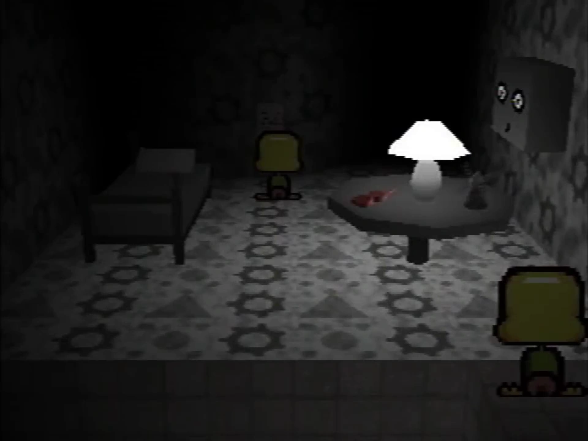

There have been several misconceptions and rumors that have spread amongst Petscop fans. The purpose of this article is to catalog and contextualize recurring pieces of misinformation.
Throughout the series, there are several instances where a text box will appear without any text. These are often misinterpreted as censorship when the darker texture from the Newmaker Plane is used, most notably at the end of Petscop 14 when the game crashes, and in Petscop 16 before the Burn-in Monitor appears. These are not censored.
When an image of a censored object is brightened, the black box will remain completely black. By contrast, brightening a screenshot of an empty text box will result in the box itself becoming brighter, as the texture is dark gray, rather than entirely black.
Additionally, text boxes are slightly blurred by the composite filter applied to the videos, whereas censorship is applied after the composite filter and are not blurred.
In YouTube's thumbnails for the Petscop videos, some of the video lengths appear to be significantly longer than the actual videos. This is sometimes speculated to be a deliberate choice, or evidence that there is additional footage which was edited out.
YouTube does not provide creators with an option to display an incorrect video duration; the incorrect thumbnail timecodes are caused by a YouTube bug. While rare, this bug has also been observed on other videos. For instance, the thumbnail for this video displays a duration of over 460 hours at the time of writing, while the actual video is only 13 minutes long.
While Petscop contains several intentional references to the death of Candace Newmaker[1], fans often overstate their role in Petscop's plot, sometimes claiming that Petscop is solely "about" the tragedy. Tony has stated that this is not the case, and that the references were "only meant to tie into the themes of rebirth that are seen throughout the series".[2]
Fans also sometimes believe that Petscop previously included more direct plot elements relating to Candace Newmaker, but that these were "retconned" by Tony. This is untrue, as the references never played a direct role in the plot itself, instead only the name and several words were used. The story was not changed, Tony simply stopped using certain words:
| “ | The changes were subtle, because I was never gonna go much deeper with the references, ... Mainly, I avoided using the name Newmaker again. I didn’t want to emphasize it any more than I already had. |
” |
- Tony[2] | ||
This misconception likely originated from Game Theory's first video about Petscop, which fixates heavily on the Newmaker references while avoiding other story details. The video has received substantially more views than the original series.
While "Newmaker" is sometimes used as a title, no characters in the series are named Newmaker, and no characters are based on individuals that were involved in the situation.

The second guardian appearing briefly in Petscop 9
In some instances, people who are theorycrafting claim that Tony has confirmed or debunked a theory about Petscop's story. With the sole exceptions of confirming the Candace Newmaker allusions were intentional and that he regretted their inclusion,[3] and that the sounds at the end of Petscop 13 are that of a car door,[4] Tony has NEVER confirmed or debunked any theories. He intended for Petscop's story to be ambiguous and open to interpretation.[2]
Despite this, fans sometimes claim that Tony confirmed or debunked a theory about Petscop's plot. One recurring example being the second guardian that appears briefly in Petscop 9: Fans sometimes claim that Tony stated this was a mistake, however Tony never actually said this.
In other instances, fans have claimed that theories of an artificial intelligence (AI) being present within Petscop were confirmed by Tony, or within the series itself. While the series is ambiguous, it does not provide any evidence to confirm such a theory; AI is only ever mentioned once in the series, during Petscop 6, when Paul expresses skepticism of the idea. Tony has not commented on these theories.
Petscop is frequently miscategorized as an alternate reality game (ARG), despite having no interaction with its audience or content outside of the official YouTube channel,[5] or other defining attributes of alternate reality games. Tony does not consider Petscop to be an ARG, and did not include any responses to fan discussion in the videos.[6]
The "game" in alternate reality game refers to the fact that the audience interacts with or influences the story in some form, such as by solving external puzzles to advance the plot, or communicating with characters from the story. It does not mean that the story involves a fictitious video game like Petscop.
The Petscop videos have a filter over them that makes it look like they are captured from original hardware. Some mistakenly call this a "VHS filter" or a "CRT filter", but these are incorrect.
Petscop uses an effect that simulates composite video[7], introducing visual artifacts like dot crawl. The result is similar to what one would get when using a capture card to record the composite output of a PlayStation. The Petscop videos do not include any artifacts related to VHS cassettes or CRT monitors, as these are distinct from composite video.
{kind=link}
{kind=link}
{kind=link}
{kind=link}
{kind=link}
{kind=link}
{kind=link}
{kind=link}
{kind=link}